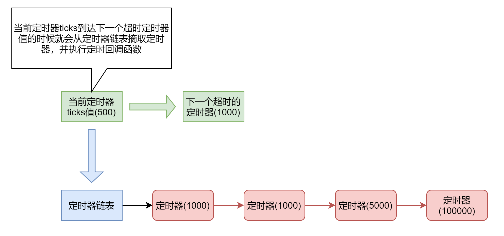

定时器
一、描述
定时器是基于系统时钟实现的，精度比较低（1ms~10ms），可以用于线程的休眠，以及对于休眠精度不高的场景。
二、原理
当时钟中断产生的时候，会改变ticks的值，与此同时也会去检测是否有定时器超时，如果有定时器超时，则会去处理定时器超时函数。
有一个定时器链表来记录所有等待超时的定时器，值得注意的是，它们是通过线性的方式插入到链表中的。 最先超时的定时器会插入到链表头，超时时间比较久的定时器会被加入到链表的末尾。
除此之外，还有一个最近超时的时间变量，来记录下一个即将超时的定时器，可以用它来检测是否需要去检测定时器链表。
当有一个定时器的ticks到达了最近超时定时器的ticks值的时候，就去检测定时器链表，如果有多个同样超时的定时器， 就会将他们全部处理，调用定时器超时处理函数，然后更新最近超时定时器的ticks。
三、框架图

四、接口
创建定时器需要指定需要超时的时间 milliseconds ，超时后调用的处理函数 handler ，处理函数参数 arg，
以及定时器的标志 flags。
标志有多重，表明不同类型的定时器。 ONESHOT 表示只超时一次， PERIOD 表示周期性地按照 milliseconds 来进行超时。
#define NX_TIMER_ONESHOT 0x01 /* timer type is one shot */
#define NX_TIMER_PERIOD 0x02 /* timer type is period */
NX_Timer *NX_TimerCreate(NX_UArch milliseconds,
NX_Bool (*handler)(struct NX_Timer *, void *arg), void *arg,
int flags);
如果是对静态的定时器进行初始化，只需要调用 NX_TimerInit 并传入定时器的地址即可。
NX_Error NX_TimerInit(NX_Timer *timer, NX_UArch milliseconds,
NX_Bool (*handler)(struct NX_Timer *, void *arg), void *arg,
int flags);
在定时器还没开始运行的时候，可以销毁一个定时器，调用 NX_TimerDestroy, 只需要传入定时器对象地址即可。
NX_Error NX_TimerDestroy(NX_Timer *timer);
创建定时器后需要调用 NX_TimerStart 启动它，才可以在超时后调用回调函数。
NX_Error NX_TimerStart(NX_Timer *timer);
当需要停止定时器的时候，调用 NX_TimerStop 即可。
NX_Error NX_TimerStop(NX_Timer *timer);